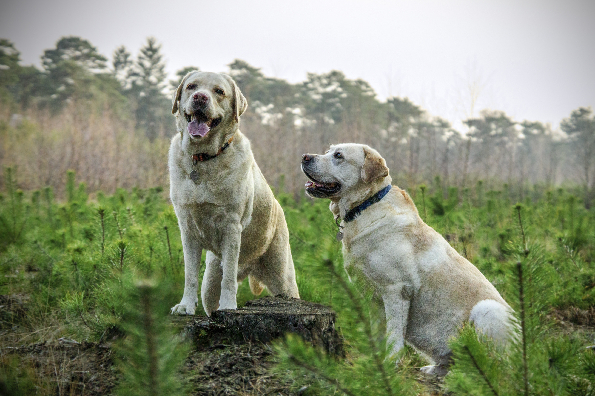
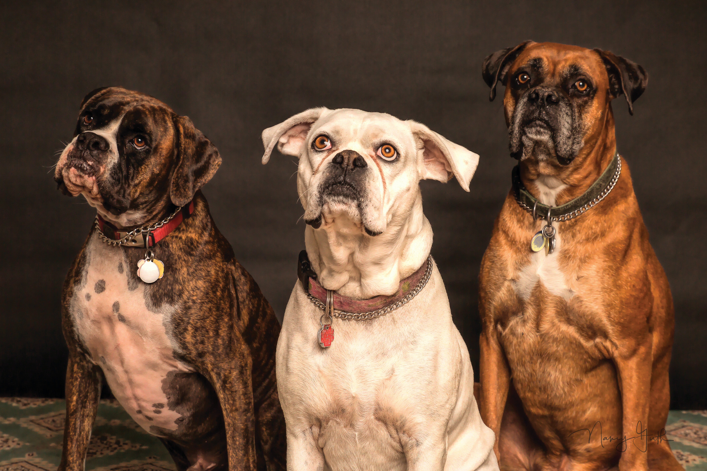

{% extends 'base.html' %}

{% block head %}
  <link rel="stylesheet" href="../static/css/adoptStyle.css">
{% endblock %}


{% block header %}
<div class="container-slider">
  <div class="slider" id="slider">
    <div class="slider__section"></div>
    <div class="slider__section"></div>
    <div class="slider__section"></div>
    <div class="slider__section"></div>
  </div>
  <div class="slider__btn slider__btn--right">&#60;</div>
  <div class="slider__btn slider__btn--left">&#62;</div>
</div>

{% endblock %}

{%block content%}
    <div class="row">
        {% for object in pets_list %}
            <div class="col-3 mt-5">
            {% include 'pets/snippets/pets.html' with pets=object %}
            </div>
        {% endfor %}
    </div>
    <script src="slideradopcion.js"></script>
{%endblock%}
